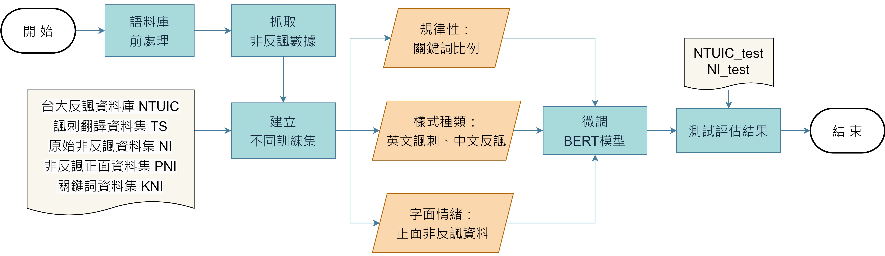
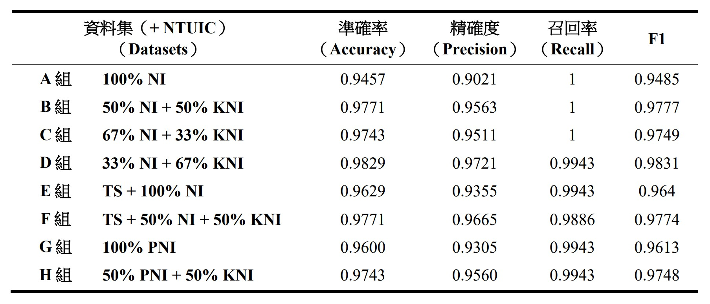

中文反諷語料庫及語句判別模型之研究
黃靖媛、詹舒宇
摘要
反諷語氣的偵測由於其字面情緒與真實意思的相反極性，在自然語言處理中的情緒分析領域上一直被視為一大難題，而中文在此方面之相關研究更是少之又少。本研究基於現有的中文反諷語料庫，建構了不同的反諷判別訓練資料集來對語言代表模型BERT進行微調，探討三項語料庫內容可能含有的偏差：反諷樣式的規律、有限資料量與種類、以及單一語句字面情緒—三者對模型判別之評價指標的影響。透過實驗和測試結果分析，我們設計出了一更加完整多元，可有效降低偏差影響程度的中文反諷訓練資料集，以協助未來相關領域研究之參考與利用。
研究目的
（一）、 建構一可供模型學習的反諷判別 BERT 下游任務模型與其訓練用資料集
（二）、 考慮中文反諷語料庫的各項偏差，以不同組成的訓練資料集，重新微調模型
（三）、 評估測試結果，探討資料集中不同因素對模型學習成效的影響程度
研究過程與方法
研究成果與展望
觀察數據後，我們歸納得出：在三項反諷語料庫的偏差因素中，影響模型微調結果程度最大的是語料庫的規律性以及其有限的反諷樣式種類。而增加常見所謂「反諷關鍵詞」於非反諷資料中的比例，可有效減緩此偏差對模型學習造成的影響。另外，針對其他問題所設計的訓練集，雖然成效相對沒有顯著提升，但也仍皆有一定的改善效果。
本研究藉由提升訓練資料的質量，在以有限之資料量減少成本的同時，使模型保有一定的成效。在未來，我們將繼續對原中文反諷語料進行擴充與精進，以嘗試為此領域作出一份貢獻。